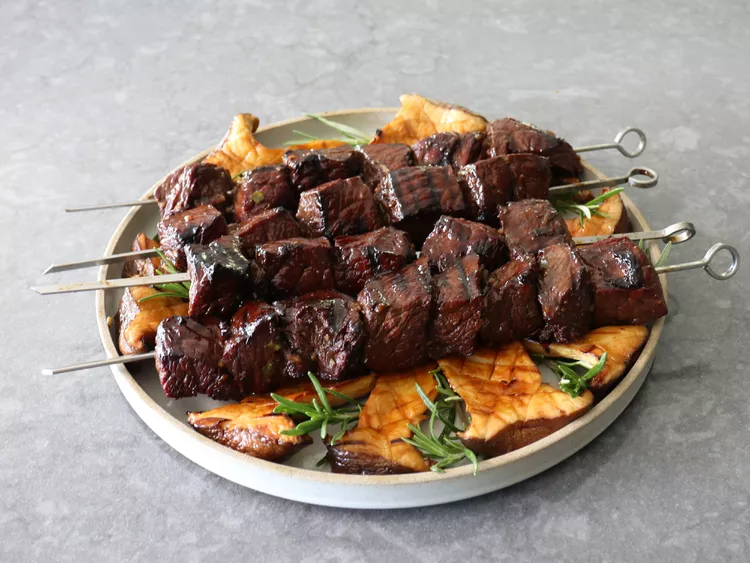
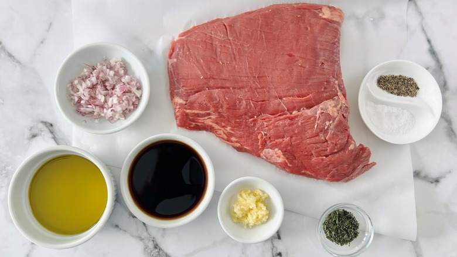

Grilled Balsamic Beef

This grilled balsamic beef would be one of my signature dishes if I were a chef at a barbecue restaurant.
The aged balsamic vinegar-based marinade is perfectly balanced, and grilling over high heat creates a beautiful sear.
Ingredients

Here are ingridients for this recepie:
- 1/2 cup aged balsamic vinegar
- 1/4 cup olive oil
- 1 tablespoon Worcestershire sauce
- 6 garlic cloves, finely minced
- 1/2 cup sliced green onion
- 1 teaspoon freshly ground black pepper
- 2 teaspoons kosher salt
- 1/8 teaspoon cayenne pepper
- 2 teaspoons honey
- 1/4 cup fresh rosemary leaves
- 2 pounds beef top sirloin
- 4 skewers
Directions
Steps for this dish:
- Step 1: Whisk balsamic vinegar, olive oil, Worcestershire sauce, garlic, green onion, salt, black pepper, cayenne, and honey together in a bowl. Add rosemary and set aside.
- Step 2: Cut beef into cubes about 1 1/4- to 1 1/2- inch square and add to marinade; stir to coat all cubes well. Wrap and refrigerate overnight, tossing occasionally if possible.
- Step 3: Thread beef on 4 skewers, and pat dry with paper towels before grilling. Save any excess marinade for basting.
- Step 4: Grill over high heat, basting occasionally with marinade, about 5 minutes per side for medium, or until beef reaches desired doneness. Remove meat from grill and let rest 5 minutes before serving.
- Step 5: Meanwhile, bring remaining marinade to a boil in a saucepan. Strain and use as a sauce for serving.